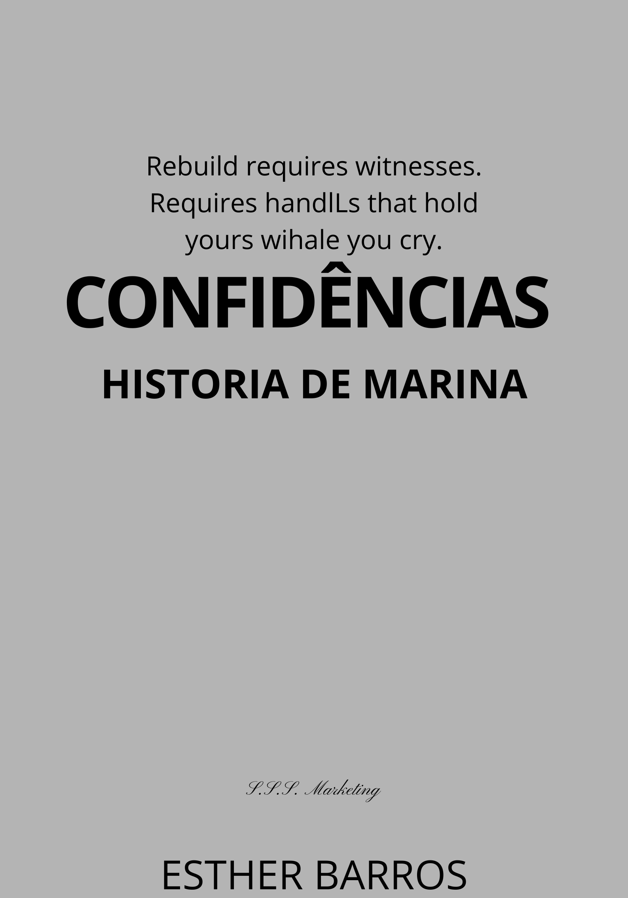

CONFIDENCIAS
Confidencias conta a hitoria de Mariana uma jovem que acabou de teminar um relacinameto e ta aprendendo a lidar com sua nova realidade.
Sentimentos e memórias se entrelaçam, uma jovem mulher se vê mergulhada em um turbilhão emocional após meses de silêncio. Desde o término abrupto de seu relacionamento, ela construiu uma vida que parecia normal, mas a rotina é desestabilizada quando lembranças do passado começam a ressurgir com força. Em meio a reflexões profundas e questionamentos sobre suas escolhas, ela percebe que deixou uma porta entreaberta para seu ex-parceiro — um gesto involuntário que a faz reconsiderar tudo o que acreditava ter superado. A protagonista navega por suas emoções enquanto tenta entender por que, após oito meses sem contato, sua mente agora transborda imagens e possibilidades sobre o que poderia ter sido. As ruas da cidade, antes familiares e confortáveis, transformam-se em labirintos de nostalgia e arrependimento. A solidão escolhida como companhia torna-se pesada; cada esquina evoca fragmentos de conversas não ditas e olhares furtivos trocados no passado. À medida que seus pensamentos se intensificam, ela reflete sobre as distrações buscadas para evitar confrontar seus verdadeiros sentimentos. A ideia de reatar laços com ele começa a ganhar forma em sua mente — seria essa uma busca por reconexão ou apenas um eco do que já foi? O tempo parece passar lentamente enquanto pondera sobre o risco de abrir aquela porta novamente: será que vale a pena reviver algo enterrado? O clímax emocional surge quando decide enfrentar suas inseguranças e medos mais profundos. Um encontro inesperado pode mudar tudo; as palavras não ditas podem finalmente encontrar voz. Contudo, mesmo diante dessa possibilidade vibrante, permanece a dúvida: será possível reconstruir o que foi perdido ou é hora de seguir em frente? Entre memórias vívidas e anseios contidos, esta narrativa íntima explora os meandros da saudade e da redescoberta pessoal. Ao final dessa jornada emocional intensa, paira no ar uma pergunta inquietante: ao abrir-se para novas possibilidades, poderá ela também reencontrar partes esquecidas de si mesma?

Comprar Agora